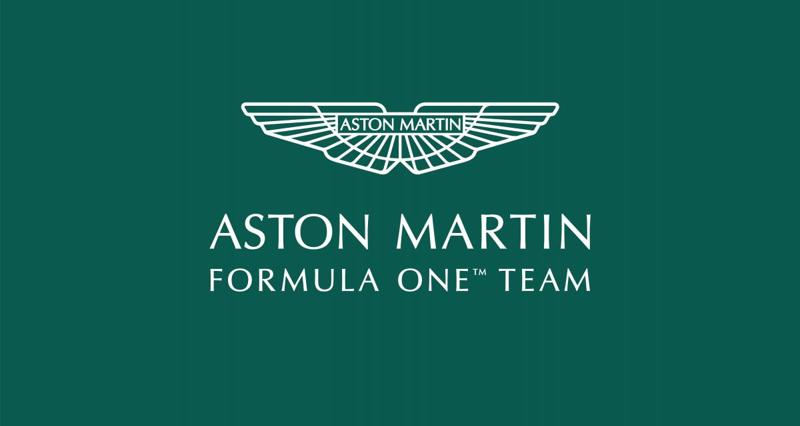
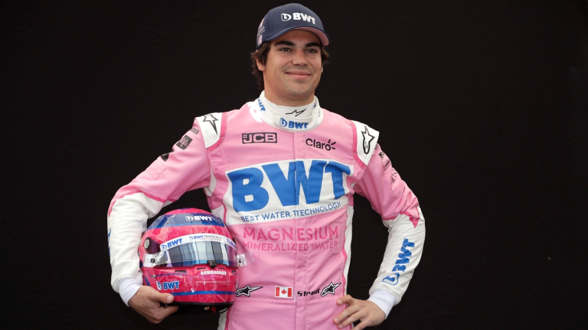
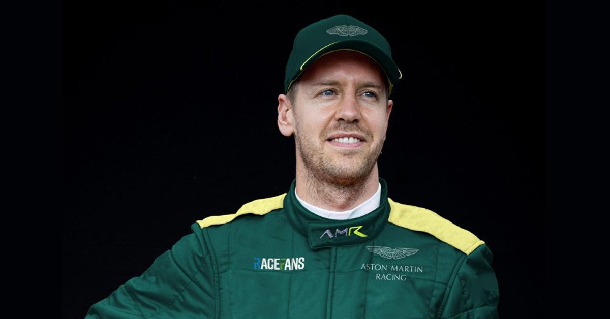

Aston Martin

Après une absence de près d'un demi-siècle, les ailes d'Aston Martin regagnent les paddocks de la Formule 1 qui était devenue sponsor de Red Bull Racing.
La marque de luxe aregagné les grilles de départ en 2021 pour la première fois en plus de 60 ans et ainsi prolonger l'héritage laissé par ses fondateurs, Lionel Martin et Robert Bamford.Grâce au rachat du milliardaire canadien,Lawrence Stroll, la marque Aston Martin est revenue plus forte et prête à concurrencer ses rivaux.
Les pilotes de la saison 2022 :
Lance Stroll

Sa carrière en F1 commence en 2017 avec l’écurie Williams. Il marquera ses premiers points lors de son Grand Prix national. Et c’est en Azerbaïdjan que le pilote canadien connaîtra son premier moment de gloire. Qualifié 8eme, il terminera sur le podium derrière Ricciardo et Bottas. En 2019 il quitte Williams pour partir chez Racing Point dont son père est un des propriétaires. Pour sa première course, il termine 9eme et marque ses premiers points. Il montera enfin sur deux podiums durant cette saison.
En 2020, son père prendra le contrôle de l’écurie Aston Martin. Lance Stroll rejoindra donc Aston Martin à partir de 2021, aux côtés de son père.
Sébastian Vettel

Vainqueur quatre fois consécutivement du championnat du monde de Formule 1, de 2010 à2013, Vettel est l’un des pilotes les plus talentueux de l’histoire de la F1.
Après avoir été pilote-essayeur pour BMW Sauber et fait ses débuts en Formule 1 à l'occasion du GP des États-Unis 2007, Vettel est engagé comme pilote titulaire de la Scuderia Toro Rossoet devient, le plus jeune poleman et le plus jeune vainqueur d'un Grand Prix.
En 2009, il rejoint l'écurie Red Bull puis fera ensuite son entrée à Ferrari, pendant 5 ans.
Il sera ensuite engagé par Aston Martin. À Bakou, en se classant deuxième, il offre à sa nouvelle écurie le premier podium de son histoire.